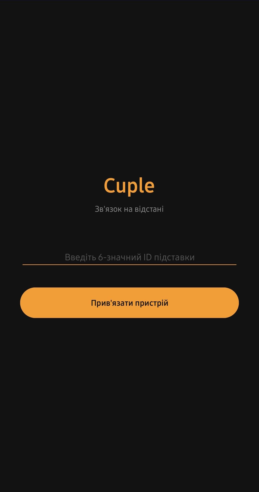
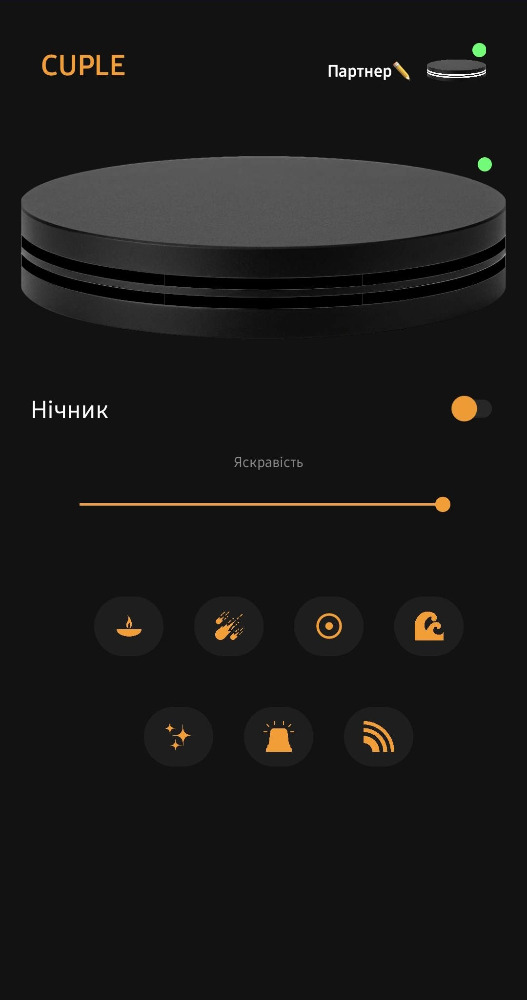
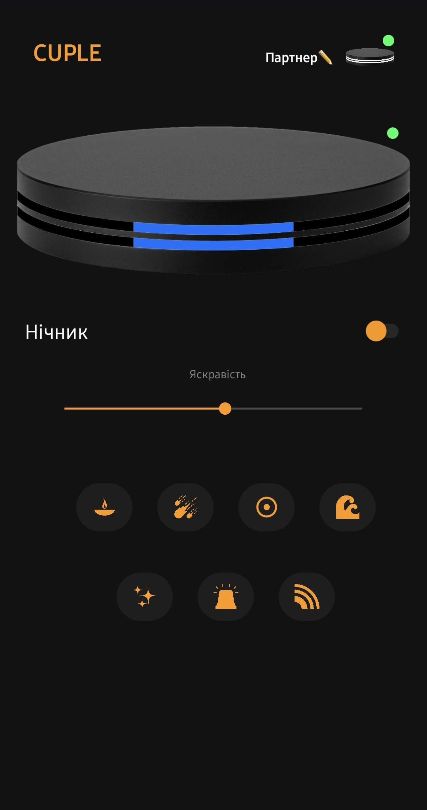
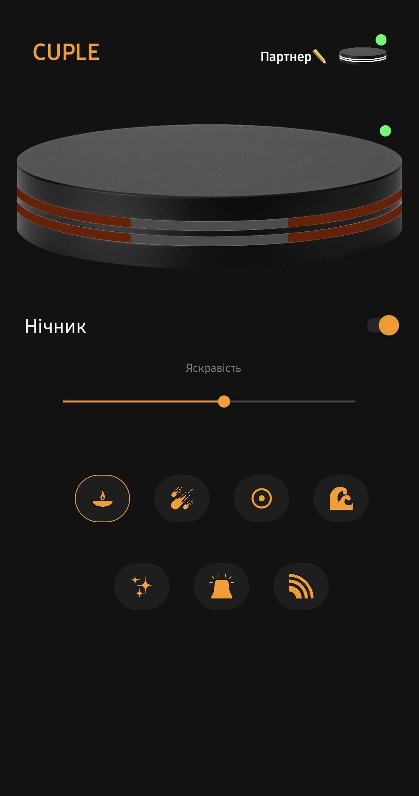
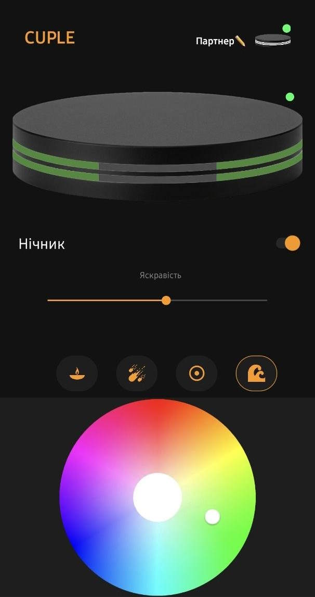
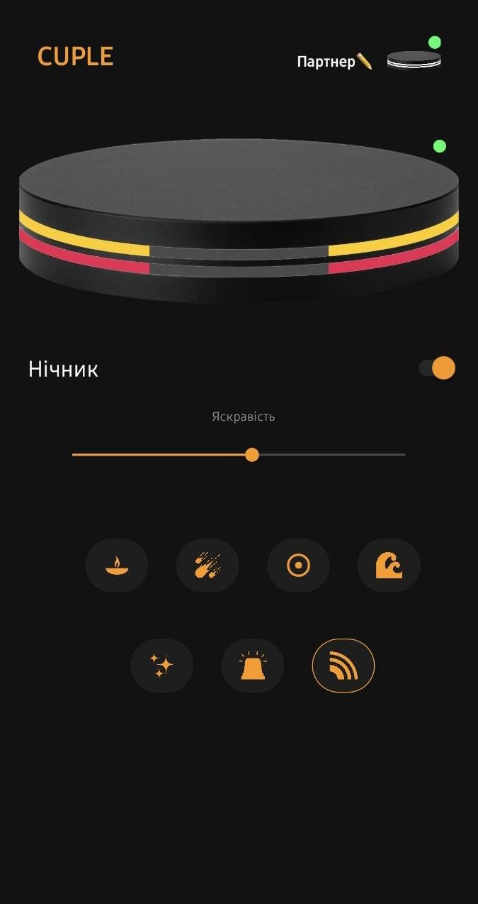
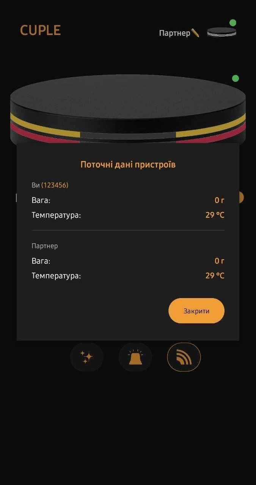

Натисніть кнопку нижче, щоб завантажити офіційний інсталяційний файл програми для Android та керувати вашим нічником.
Завантажити Cuple_v1.1.2.apk
При першому запуску введіть ID код. Він є на дні Вашої підставки. Для підтвердження потрібно підтвердити прив’язку кнопкою на підставці.

Ви можете слідкувати за онлайн статусом вашої підставки та підставки вашого партнера. Можна дати ім’я підставці партнера.

Візуальне відображення наявності Вашої чашки(верхня індикація) та чашки партнера(нижня індикація). Колір залежить від температури чашки.

Віртуальна підставка може працювати як НІЧНИК: вибирайте режим на свій смак! Кнопка на нічнику слугує для ввімкнення/вимкнення нічника(довге натискання) та перемикання режимів(коротке натискання).

Зручна палітра для вибору будь-якого відтінку. Просто натисніть на кнопку режиму ще раз.

Режими "Космос", "СтробосКоп" та "Веселка" також Вам сподобаються.

Перегляд точної інформаціїпро ваші підставки. Просто затисніть логотип CUPLE